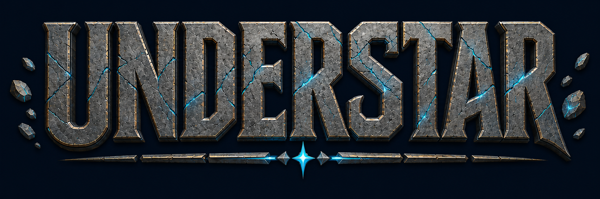
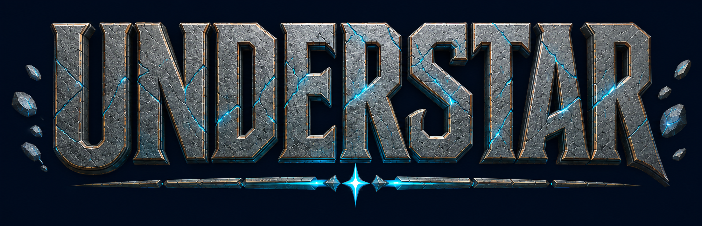
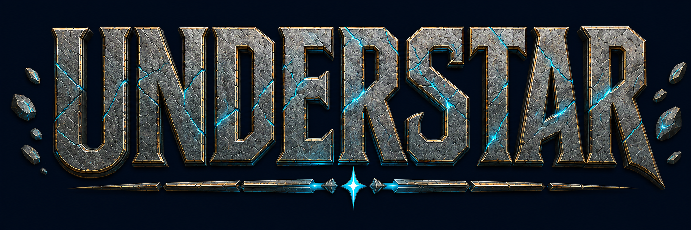

Compare finish, corner highlights and shadow depth. Click any image to inspect its native detail.

Matte gray stone, soft neutral light and restrained bronze corners.
Download PNG
Directional cool light, sharper relief and cyan edge reflection.
Download PNG
Warm metal highlights, cooler stone and softer shadow transitions.
Download PNG